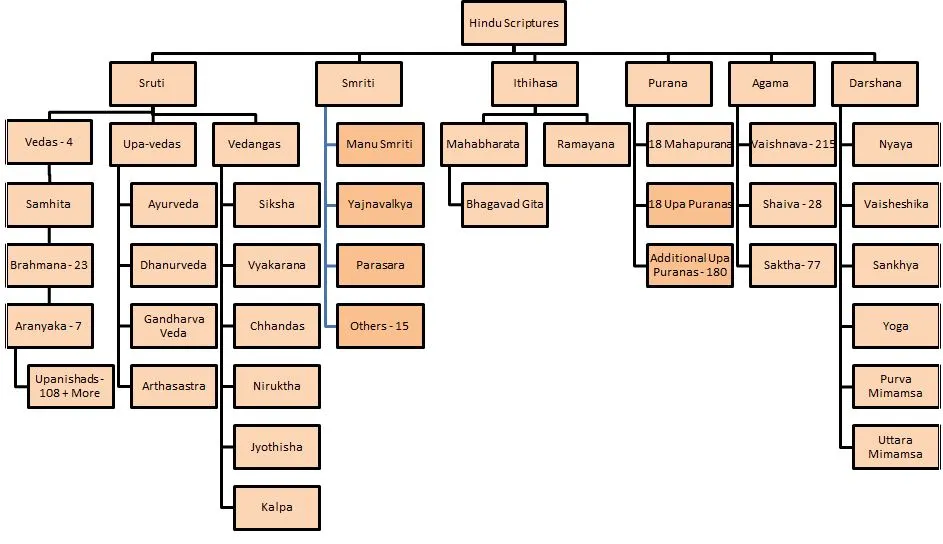

Introduction
Hinduism, one of the world's oldest religions, boasts a rich collection of ancient scriptures that continue to inspire millions. These texts, written in Sanskrit and other ancient languages, encompass a wide range of philosophical, spiritual, and practical teachings. In this blog, we will explore some of the most significant Hindu scriptures and their relevance in the modern world.

1. The Vedas: The Foundation of Hindu Wisdom
The Vedas are the oldest and most authoritative Hindu scriptures, composed between 1500 and 500 BCE. They consist of four main texts: the Rigveda, Yajurveda, Samaveda, and Atharvaveda. These texts contain hymns, rituals, and philosophical insights that form the bedrock of Hindu thought.
The Four Vedas
Rigveda
The Rigveda is the oldest of the four Vedas and consists of 1,028 hymns dedicated to various deities. It emphasizes the importance of cosmic order (Rta) and the interconnectedness of all life.
"Truth is one; the wise call it by many names." – Rigveda 1.164.46
Story: The story of the sage Dirghatamas in the Rigveda highlights the importance of seeking knowledge and understanding the universe's mysteries.
Yajurveda
The Yajurveda contains ritualistic formulas and mantras used during sacrifices. It bridges the gap between the Rigveda's hymns and the practical application of rituals.
Modern Application: The Yajurveda's emphasis on rituals can inspire structured living and mindfulness in daily routines.
Samaveda
The Samaveda is a collection of melodies and chants derived from the Rigveda. It highlights the importance of sound and music in spiritual practice.
Modern Application: The use of music in meditation and therapy today reflects the Samaveda's teachings on the power of sound.
Atharvaveda
The Atharvaveda includes spells, charms, and practical guidance for daily life. It addresses topics like health, relationships, and prosperity.
Story: The story of the sage Atharvan, who discovered fire, symbolizes the pursuit of knowledge and innovation.
Relevance Today
The Vedas emphasize the interconnectedness of all life, a concept that resonates with modern environmentalism. Mantras from the Vedas, such as the Gayatri Mantra, are still widely chanted for spiritual upliftment and mental peace.
Modern Application: The Gayatri Mantra is used in meditation practices worldwide to promote focus and inner peace.
2. The Upanishads: The Essence of Philosophical Inquiry
The Upanishads, often referred to as Vedanta, explore the nature of reality, the self (Atman), and the ultimate reality (Brahman). Key Upanishads include the Brihadaranyaka, Chandogya, and Katha Upanishads.
Key Teachings
Atman and Brahman
The Upanishads teach that the individual soul (Atman) is identical to the universal consciousness (Brahman). This non-dualistic philosophy is central to Advaita Vedanta.
"Tat Tvam Asi" (Thou art That) – Chandogya Upanishad
Story: The story of Nachiketa in the Katha Upanishad illustrates the pursuit of spiritual knowledge and the importance of perseverance.
Paths to Liberation
The Upanishads outline various paths to liberation (Moksha), including knowledge (Jnana), devotion (Bhakti), and action (Karma).
Modern Application: The practice of mindfulness meditation draws heavily from the Upanishadic emphasis on self-awareness.
Relevance Today
The Upanishads promote self-inquiry and introspection, which are central to modern mindfulness and meditation practices. Their teachings on non-duality inspire a sense of unity and oneness, addressing modern issues of division and conflict.
Modern Application: The concept of "oneness" is increasingly relevant in promoting global harmony and environmental sustainability.
3. The Bhagavad Gita: A Guide to Life and Duty
Part of the epic Mahabharata, the Bhagavad Gita is a dialogue between Lord Krishna and the warrior Arjuna. It addresses duty (Dharma), righteousness, and the paths to spiritual realization.
Key Teachings
Karma Yoga
Krishna advises Arjuna to perform his duty without attachment to results. This teaching is central to the concept of Karma Yoga.
"You have the right to work, but never to the fruit of work." – Bhagavad Gita 2.47
Story: Arjuna's dilemma on the battlefield symbolizes the internal conflicts we face in life, and Krishna's guidance offers a roadmap for ethical decision-making.
Bhakti Yoga
The Gita emphasizes devotion (Bhakti) as a path to spiritual realization. Krishna declares that those who surrender to Him with love and devotion attain liberation.
Modern Application: The principles of Bhakti Yoga inspire acts of kindness, charity, and community service.
Relevance Today
The Gita's teachings on performing one's duty without attachment to results are highly applicable in modern professional and personal life. It provides guidance on managing stress, ethical dilemmas, and decision-making.
Modern Application: Corporate leaders often turn to the Gita for insights on ethical leadership and decision-making.

4. The Ramayana: A Tale of Righteousness and Devotion
Authored by Valmiki, the Ramayana narrates the life of Lord Rama, his exile, and his battle against the demon king Ravana. It is a story of righteousness, loyalty, and the triumph of good over evil.
Key Teachings
Dharma and Loyalty
Rama's adherence to Dharma, even in the face of personal hardship, serves as a model for righteous living.
"Rama's life is a testament to the power of righteousness and devotion."
Story: The story of Rama's exile and Sita's abduction highlights the importance of integrity and resilience.
Hanuman's Devotion
Hanuman's unwavering devotion to Rama symbolizes the ideal of selfless service and loyalty.
Modern Application: Hanuman's story inspires individuals to overcome challenges with courage and humility.
Relevance Today
The Ramayana serves as a moral guide, emphasizing virtues like integrity, loyalty, and respect for elders. It highlights the importance of balancing personal and societal responsibilities.
Modern Application: The Ramayana is often referenced in discussions on leadership and ethical governance.
5. The Mahabharata: The Epic of Human Emotions
The Mahabharata, attributed to Vyasa, is an epic that includes the Bhagavad Gita. It explores complex human emotions, relationships, and ethical dilemmas through the story of the Kurukshetra war.
Key Teachings
Moral Ambiguity
The Mahabharata portrays the complexity of human nature, where characters often face morally ambiguous situations.
"The Mahabharata teaches us that life is a series of choices, each with its own consequences."
Story: The story of Karna, who faced discrimination despite his noble qualities, highlights the importance of empathy and justice.
Draupadi's Resilience
Draupadi's strength in the face of injustice serves as a powerful reminder of the importance of standing up for one's rights.
Modern Application: Draupadi's story is often cited in discussions on gender equality and women's empowerment.
Relevance Today
The Mahabharata's portrayal of moral ambiguity and ethical conflicts mirrors modern societal challenges. Characters like Draupadi and Karna offer lessons on resilience and dignity in adversity.
Modern Application: The Mahabharata is often referenced in discussions on ethics and justice.
6. The Puranas: Stories of Gods and Goddesses
The Puranas are a collection of stories and myths that explain Hindu cosmology, deities, and traditions. Major Puranas include the Vishnu Purana, Shiva Purana, and Devi Bhagavata Purana.
Key Teachings
Cosmology and Creation
The Puranas describe the creation of the universe and the cycles of time.
"The Puranas bring the divine into the realm of the human, making spirituality accessible to all."
Story: The story of Durga's victory over Mahishasura symbolizes the triumph of good over evil and continues to inspire devotees during festivals like Navratri.
Devotion and Festivals
The Puranas emphasize the importance of devotion (Bhakti) and celebrate the divine through festivals and rituals.
Modern Application: Festivals like Navratri and Diwali are rooted in Puranic stories and continue to be celebrated worldwide.
Relevance Today
The Puranas make complex philosophical concepts accessible through storytelling. They preserve cultural and religious traditions, fostering a sense of identity and continuity.
Modern Application: The Puranas inspire art, literature, and cultural practices across the globe.
7. The Dharmashastras: Codes of Conduct
These texts, such as the Manusmriti, provide guidelines on law, ethics, and social duties. While some aspects are controversial and outdated, they offer insights into ancient societal structures.
Key Teachings
Ethical Governance
The Dharmashastras emphasize the importance of justice, fairness, and ethical governance.
"The ruler who governs with justice earns the love of his people."
Story: The story of King Harishchandra, who upheld truth and justice despite personal suffering, serves as a model for ethical leadership.
Social Duties
These texts outline the duties of individuals based on their stage of life (Ashrama) and social role (Varna).
Modern Application: The emphasis on justice and fairness in these texts remains relevant in modern legal and ethical frameworks.
Relevance Today
The Dharmashastras highlight the importance of ethical governance and social responsibility. They encourage reflection on the evolution of societal norms and values.
Modern Application: The Dharmashastras inspire discussions on social justice and ethical governance.
8. The Yoga Sutras of Patanjali: The Science of Yoga
This text systematizes the practice of Yoga, outlining the eight limbs of Yoga (Ashtanga Yoga) as a path to self-realization.
Key Teachings
Ashtanga Yoga
The eight limbs of Yoga include ethical principles (Yamas and Niyamas), physical postures (Asanas), breath control (Pranayama), and meditation (Dhyana).
"Yoga is the stilling of the fluctuations of the mind." – Yoga Sutras 1.2
Story: The story of Patanjali, who is said to have incarnated to teach Yoga, highlights the transformative power of this practice.
Inner Peace
The Yoga Sutras emphasize the importance of inner peace and self-realization.
Modern Application: Yoga has become a global phenomenon, with millions practicing it for health and wellness.
Relevance Today
The Yoga Sutras offer a practical guide to mental and physical well-being. They provide tools for managing stress, cultivating mindfulness, and deepening self-awareness.
Modern Application: Yoga is widely practiced for its physical, mental, and spiritual benefits.
Conclusion
Hindu ancient scriptures offer timeless wisdom that continues to guide individuals in their spiritual, ethical, and personal journeys. By exploring these texts, we can gain insights into living a balanced, purposeful, and fulfilling life in the modern world.